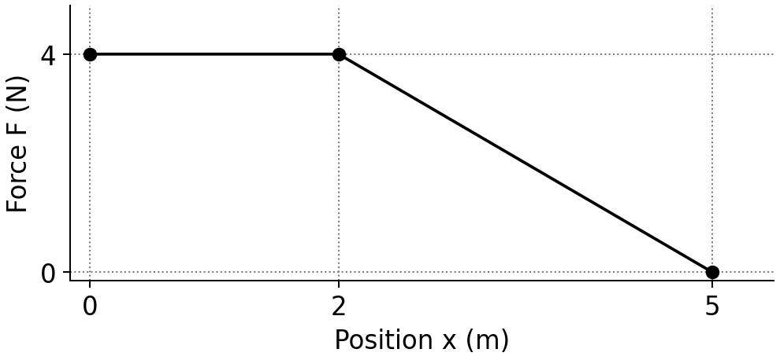
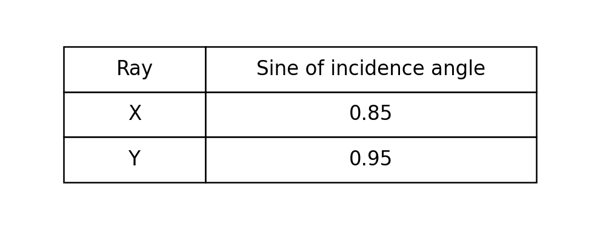
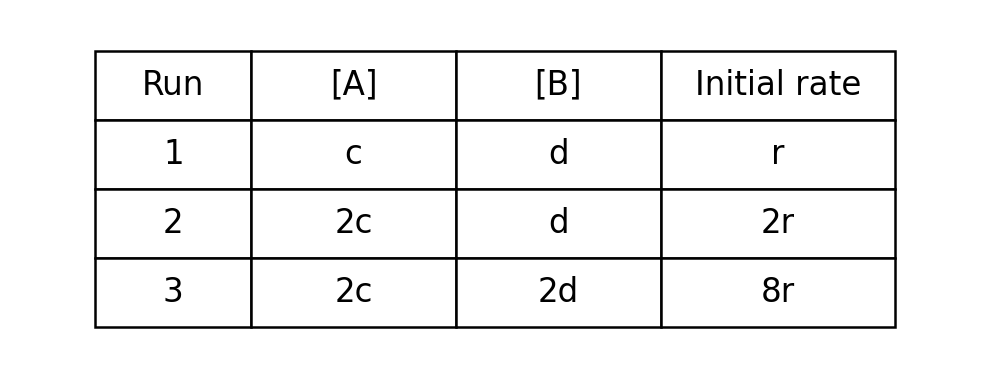
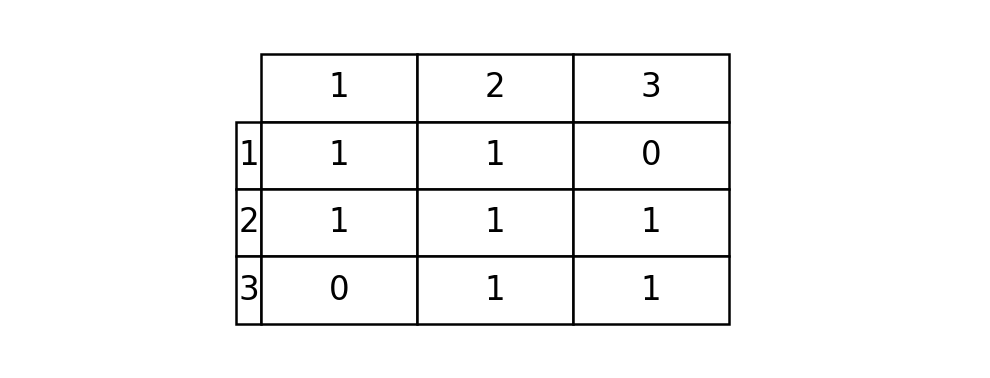

COMEDK UGET Test 1
180 minutes · 180 questions · +1 per correct answer · No negative marking
Physics
Q001. Two isolated conducting spheres carry +8 nC and −3 nC and exchange charge only with each other. If the first finishes at +2 nC, what charge is on the second?
A) −9 nC
B) +5 nC
C) +3 nC
D) −1 nC
Worked solution
Answer: (C) +3 nC
Why and working: Total charge is conserved. Q=8−3=5 nC, so q₂=5−2=3 nC.
Why not the others: (A) subtracts the transferred charge from the receiving sphere. (B) reports the total. (D) keeps the wrong sign in the balance.
Q002. Length and time units in a new system are 2 m and 0.5 s. A speed is 12 m/s. What is its numerical value in the new units?
A) 6
B) 3
C) 24
D) 48
Worked solution
Answer: (B) 3
Why and working: One new speed unit is 2 m/0.5 s=4 m/s. Divide 12 by 4.
Why not the others: (A) converts length only. (C) multiplies by the inverse time factor only. (D) multiplies by the full conversion factor.
Q003. A charge +q moves from distance r to distance 3r from a fixed +Q. What work does the electric field do?
A) −2kQq/(3r)
B) kQq/(3r)
C) 2kQq/(3r)
D) 4kQq/(3r)
Worked solution
Answer: (C) 2kQq/(3r)
Why and working: Field work equals the loss of potential energy: kQq/r−kQq/(3r)=2kQq/(3r).
Why not the others: (A) gives the potential energy change. (B) uses the final energy only. (D) adds the two energies.
Q004. Two uniform conductors X and Y in series have equal cross-sectional area, but X has three times Y's number density of mobile electrons. An ammeter shows the same steady current on either side. What can be inferred about the electron drift across the two materials?
A) Both have the same drift speed and the same electron crossing rate
B) X has one third of Y's drift speed while the same number of electrons crosses each section per second
C) X has three times Y's drift speed and the same crossing rate
D) X has one third of Y's electron crossing rate and the same drift speed
Worked solution
Answer: (B) X has one third of Y's drift speed while the same number of electrons crosses each section per second
Why and working: With fixed charge per electron, crossing rate is I/e for each section. Since that rate also equals nAv, the drift speed in X is 1/3 of Y's.
Why not the others: (A) ignores carrier-density difference. (C) uses direct rather than inverse dependence. (D) contradicts the equal measured currents.
Q005. A passenger walks 3 m toward the rear of a carriage while the carriage moves 8 m forward relative to the ground. What is the passenger's ground displacement?
A) 11 m forward
B) 3 m backward
C) 5 m backward
D) 5 m forward
Worked solution
Answer: (D) 5 m forward
Why and working: Take forward as positive. The ground displacement is +8−3=+5 m.
Why not the others: (A) adds opposite displacements as magnitudes. (B) uses the carriage frame. (C) reverses the sign.
Q006. A compass beside a straight wire deflects east of north when current is switched on. If the wire field is perpendicular to Earth's horizontal field, what is observed when the current reverses with unchanged magnitude?
A) No deflection
B) Deflection by the same angle east of north
C) Deflection by the same angle west of north
D) Deflection south of east
Worked solution
Answer: (C) Deflection by the same angle west of north
Why and working: Reversing the current reverses only the wire field. Earth's northward component retains its magnitude and sign, so the resultant is reflected about north.
Why not the others: (A) ignores the reversed wire field. (B) keeps the original wire-field direction. (D) reverses or changes the Earth-field component.
Q007. Two coaxial solenoids face each other across a gap. Looking from the gap into each coil, the currents initially circulate anticlockwise in A and clockwise in B. Both currents are then reversed, and A's current magnitude is doubled. What is the new interaction?
A) They repel, because the stronger coil always pushes away the weaker one
B) The coils still attract, because both facing poles reverse
C) They repel, because both facing poles become north
D) There is no interaction, because the two currents flow in opposite senses
Worked solution
Answer: (B) The coils still attract, because both facing poles reverse
Why and working: An anticlockwise current viewed from a face makes that face north and clockwise makes it south. Initially A is north and B south. After reversal A is south and B north, so attraction persists.
Why not the others: (A) changing magnitude cannot reverse polarity. (C) only B becomes north. (D) opposite facing poles attract.
Q008. Nonzero vectors u and v satisfy (u+v)·(u−v)=0 and u·v=0. What is the angle between u and u−v?
A) 0°
B) 45°
C) 60°
D) 90°
Worked solution
Answer: (B) 45°
Why and working: The first dot product gives u²−v²=0. The second makes the vectors perpendicular. Then cosθ=u²/(u·√(u²+v²))=1/√2, with u and v here denoting magnitudes in the denominator.
Why not the others: (A) requires the difference to be parallel to u. (C) would give cosine 1/2. (D) uses the angle between the original vectors.
Q009. A uniform magnetic field through a flat loop remains fixed in magnitude. Which change takes the flux from zero to its largest positive value?
A) Rotate the normal from parallel to perpendicular
B) Rotate the loop normal from perpendicular to parallel to the field
C) Keep the normal perpendicular and double the area
D) Keep all orientations and move the loop in the uniform field
Worked solution
Answer: (B) Rotate the loop normal from perpendicular to parallel to the field
Why and working: Φ=BA cosθ with θ measured from the normal. θ changes from 90° to 0°, so Φ goes from zero to +BA.
Why not the others: (A) decreases the flux. (C) keeps the cosine zero. (D) leaves flux unchanged in a uniform field.
Q010. A sinusoidal current with peak 6 A passes through a 4 Ω resistor. What is the average heating power?
A) 144 W
B) 36 W
C) 72 W
D) 24 W
Worked solution
Answer: (C) 72 W
Why and working: The effective current is 6/√2 A. Hence P=I_rms²R=36×4/2=72 W.
Why not the others: (A) uses the peak continuously. (B) divides the current by two before squaring. (D) does not use the square of the effective current.
Q011. A smooth air-track glider moves right. An apparatus applies equal horizontal forces in opposite directions while it moves. What happens to its horizontal velocity?
A) It falls to zero
B) It increases
C) It remains constant
D) It reverses
Worked solution
Answer: (C) It remains constant
Why and working: The horizontal resultant is zero. Newton's first law preserves the initial velocity.
Why not the others: (A) equates force balance to rest. (B) counts only the rightward force. (D) counts only the leftward force.
Q012. A parallel-plate capacitor charges through an ideal wire with current I. What displacement current crosses the full gap area when edge effects are neglected?
A) I in the sense of the changing electric flux
B) Zero because no charges cross the gap
C) I/2 because the two plates share the current
D) 2I because both plates carry charge
Worked solution
Answer: (A) I in the sense of the changing electric flux
Why and working: Continuity of the total current gives I_d=ε₀ dΦ_E/dt=dQ/dt=I in the gap.
Why not the others: (B) confuses displacement with charge transport. (C) incorrectly divides one series current. (D) double counts the plate charges.
Q013. A concave mirror forms a real image. The object moves toward the mirror while remaining beyond the focus. How does the real image distance change?
A) It decreases
B) It increases
C) It stays fixed
D) The image moves behind the mirror
Worked solution
Answer: (B) It increases
Why and working: Use positive real distances: 1/v=1/f−1/u. As u decreases toward f from above, 1/u increases and 1/v falls while remaining positive.
Why not the others: (A) assumes image distance follows object distance. (C) confuses a fixed focal length with a fixed image position. (D) requires u to cross inside the focal distance.
Q014. The graph gives the force component along a body’s displacement. What work is done between x=0 and x=5 m?

A) 8 J
B) 14 J
C) 20 J
D) 6 J
Worked solution
Answer: (B) 14 J
Why and working: The force–distance area is a rectangle 4×2 plus a triangle 4×3/2=14 J.
Why not the others: (A) omits the triangular part. (C) uses constant force for the full distance. (D) omits the rectangular part.
Q015. An expanding spherical wavefront is inspected on a very small patch far from the source. In which direction is the local ray?
A) Along the tangent
B) Along the outward normal
C) Toward the source
D) Along a line of constant phase on the patch
Worked solution
Answer: (B) Along the outward normal
Why and working: Rays in the uniform medium are normal to equal-phase surfaces. An expanding front propagates away from the source.
Why not the others: (A) lies in the equal-phase surface. (C) is the inward normal. (D) does not cross successive wavefronts.
Q016. Three stopping potential measurements for one clean metal are taken above threshold. At the same frequency a brighter beam doubles the saturation current. What should a plot of stopping potential against frequency show for the brighter beam?
A) The same slope and the same threshold intercept
B) Twice the slope and the same threshold intercept
C) The same slope and half the threshold frequency
D) Twice the slope and twice the threshold frequency
Worked solution
Answer: (A) The same slope and the same threshold intercept
Why and working: eV_s=hf−φ. The slope h/e and intercept f₀=φ/h depend neither on flux nor on the number collected. Higher intensity changes the current only.
Why not the others: (B) incorrectly scales h/e with intensity. (C) changes the material work function. (D) changes both constants.
Q017. Two bodies of masses m and 3m move on a line with velocities +6 and −2 m/s. An internal spring then gives the smaller body an additional +3 m/s. What is the final velocity of the larger body?
A) −1 m/s
B) −3 m/s
C) +3 m/s
D) −5 m/s
Worked solution
Answer: (B) −3 m/s
Why and working: Initial momentum is 6m−6m=0. Internal forces preserve total momentum, so with v_small=9 m/s, 9m+3mv=0.
Why not the others: (A) gives the larger body impulse in the same direction. (C) reverses its direction despite zero total momentum. (D) assigns equal speed changes rather than equal momentum changes.
Q018. What feature of Rutherford scattering most directly indicated a compact central concentration of charge?
A) The undeflected majority alone
B) Rare large-angle deflections
C) A continuous optical spectrum
D) The uniform absorption of all incident particles
Worked solution
Answer: (B) Rare large-angle deflections
Why and working: Rare strong deflections require very close encounters with a compact concentrated charge.
Why not the others: (A) mainly shows the atom is mostly open space. (C) is not scattering evidence. (D) was not observed and would not explain deflection.
Q019. Why can the nuclear force bind neighbouring protons yet fail to neutralise Coulomb repulsion across an arbitrarily large nucleus?
A) The nuclear force acts only between neutrons
B) The nuclear force is short ranged
C) The Coulomb force vanishes inside a nucleus
D) The nuclear force requires opposite electric charges
Worked solution
Answer: (B) The nuclear force is short ranged
Why and working: Strong nuclear attraction is significant over nuclear-neighbour distances. Coulomb repulsion has a much longer range.
Why not the others: (A) proton–proton nuclear interactions exist. (C) charged protons still repel. (D) nuclear attraction is not electrostatic pairing.
Q020. Two planets orbit the same star with semimajor axes a and 4a. What is the ratio of their orbital periods, outer to inner?
A) 4
B) 16
C) 8
D) 2
Worked solution
Answer: (C) 8
Why and working: Kepler gives T²∝a³ around the same central mass. T_out/T_in=4^(3/2)=8.
Why not the others: (A) uses a linear law. (B) uses a square law. (D) uses only a square root.
Q021. Two solids have full valence bands at low temperature. One becomes appreciably more conducting after mild heating and the other does not. Which band picture explains this?
A) The first has a wider forbidden gap
B) The first has a smaller forbidden gap
C) The first has no available conduction-band states
D) The second has overlapping bands
Worked solution
Answer: (B) The first has a smaller forbidden gap
Why and working: Thermal excitation across a smaller gap produces appreciable mobile carriers at lower temperatures.
Why not the others: (A) would hinder excitation. (C) would remove the destination states. (D) would favour conduction in the second solid.
Q022. Charges +q and +4q are fixed at x=0 and x=3a. At which point between them does a small positive test charge have zero net force?
A) x=2a
B) x=3a/2
C) x=a
D) x=3a/4
Worked solution
Answer: (C) x=a
Why and working: The forces oppose between the charges. Set 1/x²=4/(3a−x)², giving 3a−x=2x and x=a.
Why not the others: (A) swaps the source strengths. (B) ignores unequal charges. (D) uses an incorrect distance ratio.
Q023. A second wire of the same material has twice the length and twice the cross-sectional area of an original wire. Both are under the same tension and in their elastic range. How do their extensions compare?
A) They are equal
B) The new wire extends twice as far
C) The new wire extends half as far
D) The new wire extends four times as far
Worked solution
Answer: (A) They are equal
Why and working: Extension is FL/(AY) for the same material and load. Doubling both L and A cancels.
Why not the others: (B) accounts for length only. (C) accounts for area only. (D) incorrectly multiplies the two factors.
Q024. A dipole with point charges ±q has its midpoint at O. P lies on the perpendicular bisector. A fixed charge +Q is then placed the same distance from O and P. Which statement is true of the new potentials?
A) Both are zero
B) V(O)=V(P) and both are positive
C) V(O)>V(P)
D) V(P)>V(O)
Worked solution
Answer: (B) V(O)=V(P) and both are positive
Why and working: At each point the dipole's two scalar contributions cancel. The additional positive charge contributes the same positive kQ/d to each.
Why not the others: (A) omits the extra source. (C) assumes O is nearer to +Q. (D) assumes P is nearer to +Q.
Q025. A wire of uniform section consists of series segments X and Y of equal carrier density. Mobility in Y is one third that in X. If each segment is the same length, what fraction of the total voltage is across Y?
A) 3/4
B) 1/4
C) 1/3
D) 1/2
Worked solution
Answer: (A) 3/4
Why and working: Same current and area give the same drift speed. From v_d=μE, E_Y=3E_X. Equal lengths imply V_Y/(V_X+V_Y)=3/4.
Why not the others: (B) uses the fraction across X. (C) reports the mobility ratio. (D) ignores unequal fields.
Q026. For a static liquid of uniform density, which pair of points has equal liquid pressure?
A) Two points the same distance from the container wall
B) Two points directly above one another
C) Any two points below the free surface
D) Two points at the same depth in the connected liquid
Worked solution
Answer: (D) Two points at the same depth in the connected liquid
Why and working: The hydrostatic pressure is p_surface+ρgh, so it depends on depth.
Why not the others: (A) wall distance does not set head. (B) different vertical positions imply different depths. (C) pressure increases with depth.
Q027. Two identical concentric circular loops carry currents of 3 A and 1 A circulating oppositely. How large is the field at the common centre relative to that from a single loop carrying 1 A?
A) 2 times
B) 4 times
C) 3 times
D) Zero
Worked solution
Answer: (A) 2 times
Why and working: For the same radius, B is proportional to signed current. The net contribution is 3−1=2 times the reference.
Why not the others: (B) adds opposite fields. (C) ignores the weaker loop. (D) assumes equal currents.
Q028. At points on the axial line and equatorial line of a short bar magnet, how do the field directions compare with its dipole moment?
A) Both parallel
B) Both antiparallel
C) Axial parallel, equatorial antiparallel
D) Axial antiparallel, equatorial parallel
Worked solution
Answer: (C) Axial parallel, equatorial antiparallel
Why and working: Outside the magnet the field emerges from north and returns to south. On the axial line it points along the moment, and on the equatorial line it points opposite.
Why not the others: (A) ignores equatorial return direction. (B) reverses the axial direction. (D) reverses both.
Q029. Equal masses of two materials, both initially at the same temperature, receive the same heat without changing phase. The specific heat of X is three times that of Y. How do their temperature rises compare?
A) ΔT_X=ΔT_Y/3
B) ΔT_X=3ΔT_Y
C) ΔT_X=ΔT_Y
D) ΔT_X=ΔT_Y/9
Worked solution
Answer: (A) ΔT_X=ΔT_Y/3
Why and working: Q=mcΔT. At equal Q and m the temperature rise scales as 1/c.
Why not the others: (B) uses direct proportionality. (C) ignores material dependence. (D) incorrectly squares the ratio.
Q030. Flux per turn in a 50-turn coil changes uniformly from 0.04 Wb to 0.01 Wb in 0.1 s. What is the magnitude of its average emf?
A) 0.3 V
B) 25 V
C) 1.5 V
D) 15 V
Worked solution
Answer: (D) 15 V
Why and working: Faraday gives N·ΔΦ/Δt=50×0.03/0.1=15 V.
Why not the others: (A) omits turns. (B) uses the sum instead of the change. (C) misses division by elapsed time.
Q031. In a series AC circuit, at angular frequency ω the inductive reactance is 2 Ω and the capacitive reactance is 8 Ω. The drive frequency triples with the components unchanged. What is the net reactance then?
A) +10/3 Ω
B) −18 Ω
C) −2 Ω
D) +8/3 Ω
Worked solution
Answer: (A) +10/3 Ω
Why and working: At three times ω, X_L becomes 6 Ω and X_C becomes 8/3 Ω. The net reactance is 6−8/3=+10/3 Ω.
Why not the others: (B) triples both reactances. (C) adjusts only the inductive reactance. (D) reports the capacitive magnitude alone.
Q032. A and B are each separately in thermal equilibrium with the same thermometer at one stable reading. What happens when A and B are brought into thermal contact with no other changes?
A) Heat flows from the larger body
B) Heat flows from the smaller body
C) Heat flows from the body with higher heat capacity
D) There is no net heat transfer between them
Worked solution
Answer: (D) There is no net heat transfer between them
Why and working: The zeroth law implies equal temperatures. With no temperature difference there is no net heat flow.
Why not the others: (A) size does not determine direction. (B) size does not determine direction. (C) heat capacity is not temperature.
Q033. A plane electromagnetic wave travels vertically upward. At point A its electric field points east. At point B the fields are in opposite phase to those at A at the same instant. Which directions do the magnetic fields point at A and B respectively?
A) South and north
B) North at both points
C) East and west
D) North and south
Worked solution
Answer: (D) North and south
Why and working: For upward propagation, east × north points up. The electric field reverses at B, so the magnetic field must also reverse to preserve the propagation direction.
Why not the others: (A) gives downward propagation. (B) does not reverse the field with phase. (C) makes the two fields parallel.
Q034. A ray inside a slab of index 5/3 is incident on air at an angle whose sine is 4/5. The air outside the slab is replaced by a bulk medium of index 4/3. What occurs at the new slab boundary?
A) There is total internal reflection
B) The transmitted ray is normal to the boundary
C) The transmitted angle has sine 3/5
D) The transmitted ray is at 90° to the normal
Worked solution
Answer: (D) The transmitted ray is at 90° to the normal
Why and working: Snell gives sinθ₂=(5/3)(4/5)/(4/3)=1. The ray is at the critical limit.
Why not the others: (A) requires incidence above the critical angle. (B) requires zero transverse component. (C) uses the critical ratio for the old air boundary.
Q035. At fixed temperature, the volume of a sealed ideal gas is reduced to half. What happens to its pressure?
A) It halves
B) It stays unchanged
C) It doubles
D) It quadruples
Worked solution
Answer: (C) It doubles
Why and working: pV=nRT is constant at fixed n and T, so p₂/p₁=V₁/V₂=2.
Why not the others: (A) uses direct proportionality. (B) ignores the volume change. (D) introduces an extra factor of two.
Q036. A plane wavefront enters a medium where wave speed is lower at a slanted interface. Which Huygens construction describes its refraction?
A) Secondary wavelets have equal radii in both media in the same time
B) The new wavefront is built by adding amplitudes only at the boundary
C) Secondary wavelets travel smaller distances in the slower medium in the same time
D) The frequency must decrease as soon as the first point enters
Worked solution
Answer: (C) Secondary wavelets travel smaller distances in the slower medium in the same time
Why and working: Wavelet radius is vt. The entered part advances a smaller distance, and the common tangent gives the refracted front.
Why not the others: (A) requires equal speeds. (B) does not give the wavefront construction. (D) frequency remains fixed at the interface.
Q037. Two metals are illuminated at the same frequency above both thresholds. Metal X has a stopping potential 0.6 V larger than Y. How do their work functions compare?
A) X is 0.6 eV lower
B) X is 0.6 eV higher
C) X and Y are equal
D) X is 1.2 eV lower
Worked solution
Answer: (A) X is 0.6 eV lower
Why and working: Subtract eV_s=hf−φ for X and Y. The common photon energy cancels, giving φ_X−φ_Y=−0.6 eV.
Why not the others: (B) reverses the sign. (C) ignores the measured difference. (D) counts that difference twice.
Q038. A motion is given by x(t)=3 cos(4πt) cm, with t in seconds. How many complete oscillations occur during 1.5 s?
A) 3
B) 6
C) 1.5
D) 4
Worked solution
Answer: (A) 3
Why and working: ω=4π rad/s, so f=ω/(2π)=2 Hz. The count is ft=3.
Why not the others: (B) omits the factor of two in the conversion. (C) assumes a one-second period. (D) uses the coefficient of π alone.
Q039. In the Bohr hydrogen model, the radius of orbit n is nine times the first-orbit radius. What is n?
A) 3
B) 9
C) 1/3
D) 81
Worked solution
Answer: (A) 3
Why and working: r_n/r₁=n². The positive integer satisfying n²=9 is 3.
Why not the others: (B) assumes linear scaling. (C) inverts the ratio. (D) squares instead of taking a root.
Q040. The rest mass of a bound nucleus is smaller than the total mass of its separated constituents by 0.020 u. Using 1 u c²=931 MeV, estimate the energy needed to separate it completely.
A) 0.020 MeV
B) 46.6 MeV
C) −18.6 MeV
D) 18.6 MeV
Worked solution
Answer: (D) 18.6 MeV
Why and working: Separation requires the positive binding energy Δmc²=0.020×931 MeV=18.62 MeV.
Why not the others: (A) treats atomic mass units as energy without conversion. (B) uses a wrong scale factor. (C) uses the sign for energy released during formation.
Q041. A pulse travels east along an ideal stretched string. A marked point on the string moves only vertically. Which description fits?
A) A transverse wave transporting energy east
B) A longitudinal wave transporting matter east
C) A longitudinal wave transporting energy upward
D) A transverse wave transporting the marked point east
Worked solution
Answer: (A) A transverse wave transporting energy east
Why and working: Displacement is perpendicular to propagation. The disturbance conveys energy while the marked material point moves vertically.
Why not the others: (B) the displacement is perpendicular and material does not travel east. (C) vertical motion is not the propagation direction. (D) contradicts the observed point motion.
Q042. Two silicon samples are doped separately with dilute pentavalent and trivalent impurities. Both remain electrically neutral overall. Which pairing is consistent?
A) Both samples have electrons as majority carriers because silicon is neutral.
B) Pentavalent sample: electrons are majority carriers. Trivalent sample: holes are majority carriers.
C) Pentavalent sample: holes are majority carriers. Trivalent sample: electrons are majority carriers.
D) The pentavalent sample is negatively charged overall and the trivalent sample positively charged.
Worked solution
Answer: (B) Pentavalent sample: electrons are majority carriers. Trivalent sample: holes are majority carriers.
Why and working: Donors add accessible electrons and acceptors create accessible holes. Fixed impurity ions balance the carrier charge.
Why not the others: (A) confuses neutrality with carrier type. (C) reverses donor and acceptor roles. (D) ignores charge compensation.
Q043. A circular ring carries a uniform linear charge density λ and has circumference L. What is its total charge?
A) λ/L
B) 2λL
C) λL
D) λL²
Worked solution
Answer: (C) λL
Why and working: For constant linear density dQ=λ dl. Integrating along the full ring gives Q=λL.
Why not the others: (A) divides by length instead of multiplying. (B) counts the ring twice. (D) confuses linear density with area scaling.
Q044. Which SI unit is derived rather than a base unit?
A) Pascal
B) Kelvin
C) Ampere
D) Mole
Worked solution
Answer: (A) Pascal
Why and working: Pressure is force per area, so Pa=kg m⁻¹ s⁻² and is derived.
Why not the others: (B) base unit of temperature. (C) base unit of current. (D) base unit of amount of substance.
Q045. A positive test charge moves along one equipotential between two points in a nonzero electric field. How much net work does the electric field do?
A) Zero
B) Positive if the path is long
C) Negative because the charge is positive
D) Equal to charge times the shared potential
Worked solution
Answer: (A) Zero
Why and working: W=q(V_start−V_end)=0 because both endpoint potentials match.
Why not the others: (B) work depends on the potential difference. (C) sign of charge alone does not set work. (D) uses absolute potential instead of difference.
Q046. A device's I-versus-V graph has values I=1 A at V=2 V and I=4 A at V=4 V at constant temperature. What can be concluded?
A) Its static resistance is constant
B) Its static resistance doubles
C) Its static resistance becomes zero
D) Its static resistance decreases between the points
Worked solution
Answer: (D) Its static resistance decreases between the points
Why and working: R=V/I gives 2 Ω and 1 Ω. The different ratios also rule out proportionality across these points.
Why not the others: (A) requires equal ratios. (B) reverses the observed change. (C) the final ratio is finite.
Q047. A cart covers the first half of a straight distance at 3 m/s and the second half at 6 m/s. What is its average speed?
A) 4.5 m/s
B) 3 m/s
C) 5 m/s
D) 4 m/s
Worked solution
Answer: (D) 4 m/s
Why and working: For equal lengths d, total time is d/3+d/6=d/2. Average speed=2d/(d/2)=4 m/s.
Why not the others: (A) averages speeds for equal times. (B) uses only the slower segment. (C) does not weight by the actual times.
Q048. An Amperian circle of radius r surrounds an infinitely long straight current. A second coaxial circle has radius 2r. What happens to the circulation of B around the second circle?
A) It halves
B) It doubles
C) It stays unchanged
D) It falls to one quarter
Worked solution
Answer: (C) It stays unchanged
Why and working: Ampère's law gives ∮B·dl=μ₀I_enclosed. Both loops enclose the same signed current.
Why not the others: (A) describes field magnitude, not circulation. (B) counts perimeter without the field change. (D) uses inverse-square scaling for circulation.
Q049. A bar magnet can freely turn about its centre in a uniform magnetic field. Which zero-torque orientation is stable against a small rotation?
A) Magnetic moment antiparallel to the field
B) Magnetic moment perpendicular to the field
C) Magnetic moment parallel to the field
D) Both parallel and antiparallel equally stable
Worked solution
Answer: (C) Magnetic moment parallel to the field
Why and working: When the moment is tilted slightly from parallel, the magnetic torque turns it back toward the field. A small tilt away from antiparallel is amplified.
Why not the others: (A) is an energy maximum. (B) has nonzero torque. (D) zero torque alone does not guarantee stability.
Q050. A walker starts at point A=(1,2) m and arrives at B=(4,6) m. In a second coordinate system sharing the same axes but with its origin at B, what is the position vector of A and the displacement vector A→B?
A) Both (3,4) m
B) Both (−3,−4) m
C) Position (1,2) m and displacement (4,6) m
D) Position (−3,−4) m and displacement (3,4) m
Worked solution
Answer: (D) Position (−3,−4) m and displacement (3,4) m
Why and working: Subtract B from the original coordinates for positions. Thus A is (−3,−4) m and B becomes (0,0). Their difference is still (3,4) m.
Why not the others: (A) reverses A's position. (B) reverses the displacement. (C) ignores the new origin and treats a position as displacement.
Q051. The north pole of a magnet is moving toward a closed conducting ring. It passes no point of the ring before being pulled back. Viewed from the magnet side, what are the current directions during approach and withdrawal?
A) Clockwise, then counterclockwise
B) Counterclockwise during both
C) Clockwise during both
D) Counterclockwise, then clockwise
Worked solution
Answer: (D) Counterclockwise, then clockwise
Why and working: Approach increases flux away from the magnet. The ring opposes it with a field toward the observer, hence counterclockwise. Withdrawal reverses the flux change and current.
Why not the others: (A) aids the change in each phase. (B) misses the reversal on withdrawal. (C) has the wrong approach direction.
Q052. In a series LCR phasor diagram with nonzero resistance at resonance, what is the phase of the source voltage relative to the current?
A) The voltage leads by 90°
B) The voltage lags by 90°
C) They are opposite in phase
D) They are in phase
Worked solution
Answer: (D) They are in phase
Why and working: At resonance X_L=X_C, so the opposing reactive voltage phasors cancel and the source voltage is resistive.
Why not the others: (A) requires a purely inductive resultant. (B) requires a purely capacitive resultant. (C) contradicts the positive resistance.
Q053. A 2 kg cart moving right at 5 m/s slows uniformly to 1 m/s in 2 s. What is its net force, taking right as positive?
A) +4 N
B) −4 N
C) −8 N
D) −2 N
Worked solution
Answer: (B) −4 N
Why and working: Δp=2(1−5)=−8 kg m/s, so F=Δp/Δt=−4 N.
Why not the others: (A) reverses the velocity change. (C) reports impulse numerically. (D) reports acceleration numerically.
Q054. Which comparison is correct in vacuum?
A) Infrared has longer wavelength than visible violet
B) Microwaves have shorter wavelength than X-rays
C) Ultraviolet has lower frequency than radio waves
D) Gamma radiation travels faster than green light
Worked solution
Answer: (A) Infrared has longer wavelength than visible violet
Why and working: Infrared lies below visible frequencies, so λ=c/f is longer.
Why not the others: (B) microwaves have much longer wavelengths. (C) ultraviolet has higher frequency. (D) vacuum speed is the same.
Q055. A fibre core has index 1.50. Its cladding index rises from 1.20 to 1.35. The figure shows two core-side incidence measurements. Which previously guided ray fails total internal reflection after the change?

A) Y only
B) Both rays
C) Neither ray
D) X only
Worked solution
Answer: (D) X only
Why and working: The critical sine rises from 1.20/1.50=0.80 to 1.35/1.50=0.90. Both exceed the old cutoff. Only X falls below the new one.
Why not the others: (A) selects the ray still above cutoff. (B) ignores Y's higher incidence sine. (C) ignores the changed threshold.
Q056. A body has kinetic energy 50 J. Braking does −32 J of work and all other forces together do zero work. What is the final speed as a fraction of the initial speed?
A) 9/25
B) 4/5
C) 3/5
D) 18/25
Worked solution
Answer: (C) 3/5
Why and working: K_f=18 J. At fixed mass speed scales as √K, so v_f/v_i=√(18/50)=3/5.
Why not the others: (A) reports the energy ratio. (B) uses the work fraction's square root. (D) uses an incorrect energy ratio without the root.
Q057. Two equally bright beams overlap. Their relative phase drifts randomly much faster than the detector response. What happens to the observed stable interference fringes?
A) They remain because the intensities are equal
B) They become all dark because the beams cancel
C) They become more distinct as phase fluctuates
D) They wash out because the interference term averages to zero
Worked solution
Answer: (D) They wash out because the interference term averages to zero
Why and working: The interference term depends on the cosine of the relative phase. Rapid random phase variation gives zero average cosine.
Why not the others: (A) equal intensity does not establish coherence. (B) requires a fixed opposite phase. (C) fluctuations lower time-averaged contrast.
Q058. Two monochromatic beams at frequencies f and 2f deliver equal power. What is the ratio of their photon arrival rates, lower frequency to higher frequency?
A) 1/2
B) 1
C) 4
D) 2
Worked solution
Answer: (D) 2
Why and working: Power equals photon rate times hf. At equal power, doubling frequency halves photon arrival rate.
Why not the others: (A) reverses the ratio. (B) confuses equal energy flux with equal photon flux. (C) uses a square rather than linear dependence.
Q059. A uniform rod of length 6 m and mass M lies from x=0 to x=6 m. Two small loads of mass M/2 each are placed at its ends. How far does the system centre of mass shift when the left load moves to x=2 m?
A) 0.5 m right
B) 1 m right
C) 2 m right
D) 0.5 m left
Worked solution
Answer: (A) 0.5 m right
Why and working: Only the left load changes its first moment. The shift is (M/2)×2/(2M)=0.5 m to the right.
Why not the others: (B) divides by the rod mass alone. (C) uses the load's full displacement. (D) reverses the displacement sign.
Q060. For the same hydrogen atom, what is the ratio of Bohr electron speeds v₂/v₁?
A) 2
B) 1/4
C) 1/2
D) 4
Worked solution
Answer: (C) 1/2
Why and working: In the Bohr model v_n scales as 1/n, so v₂/v₁=1/2.
Why not the others: (A) uses direct proportionality. (B) uses the energy scaling. (D) uses direct-square scaling.
Chemistry
Q061. A solution of a nonvolatile solid expands when warmed in a sealed container. Which concentration decreases if it stays homogeneous?
A) Molality
B) Solute mass fraction
C) Molarity
D) Solute mole fraction
Worked solution
Answer: (C) Molarity
Why and working: Molarity is n_solute/V_solution. Only V increases. The other quantities use masses or mole counts that stay fixed.
Why not the others: (A) mass of solvent stays fixed. (B) both masses stay fixed. (D) both mole counts stay fixed.
Q062. A transparent sample boils over a temperature range at fixed pressure. Distillation gives two chemically unchanged fractions of different composition. How is the starting sample classified?
A) Pure element
B) Pure compound
C) Homogeneous mixture
D) Heterogeneous mixture with visible phases
Worked solution
Answer: (C) Homogeneous mixture
Why and working: A single observed phase can contain variable proportions of substances separated physically. Different unchanged fractions support a mixture.
Why not the others: (A) cannot separate into different substances by distillation. (B) would have fixed chemical composition. (D) no visible phase boundary is described.
Q063. Standard reduction potentials for X²⁺/X and Y²⁺/Y are +0.34 V and −0.76 V. Which species loses electrons in their spontaneous standard galvanic cell?
A) X metal
B) X²⁺
C) Y²⁺
D) Y metal
Worked solution
Answer: (D) Y metal
Why and working: X²⁺ has the higher reduction potential and gains electrons. The reverse of the Y reduction half-reaction supplies them: Y → Y²⁺ + 2e⁻.
Why not the others: (A) oxidising X would reverse the spontaneous cell. (B) gains electrons at the cathode. (C) is produced at the anode.
Q064. A reactant concentration is 0.50 M at 2 s and 0.32 M at 8 s. What is its average disappearance rate between these times?
A) 0.030 M/s
B) 0.0225 M/s
C) −0.030 M/s
D) 0.18 M/s
Worked solution
Answer: (A) 0.030 M/s
Why and working: The concentration falls by 0.18 M over 6 s. Disappearance rate is −Δ[A]/Δt=0.030 M/s.
Why not the others: (B) divides by 8 s instead of the interval. (C) gives the signed derivative. (D) omits the duration.
Q065. Which observation in discharge-tube experiments indicates that cathode-ray particles are common constituents of matter?
A) Their direction is unaffected by an electric field
B) Their rays always curve toward a negatively charged plate
C) Their charge-to-mass ratio is unchanged when the cathode material changes
D) Their particle mass equals the mass of the gas atoms
Worked solution
Answer: (C) Their charge-to-mass ratio is unchanged when the cathode material changes
Why and working: Electrons from different cathodes exhibit the same charge-to-mass ratio, supporting a common particle.
Why not the others: (A) charged rays are deflected. (B) negative particles are repelled by the negative plate. (D) the electron mass is much smaller.
Q066. Chromium has ground-state configuration [Ar] 3d⁵4s¹. Which configuration results after removal of two electrons?
A) [Ar] 3d³4s¹
B) [Ar] 3d⁵
C) [Ar] 3d⁴
D) [Ar] 3d⁴4s¹
Worked solution
Answer: (C) [Ar] 3d⁴
Why and working: The 4s electron is removed first, followed by one 3d electron. Four 3d electrons remain.
Why not the others: (A) keeps 4s while removing from 3d. (B) removes only 4s. (D) also removes only one electron overall.
Q067. In [Co(en)₂Cl₂]⁺ each en is neutral and bidentate. What are the coordination number and cobalt oxidation state?
A) 4 and +3
B) 6 and +1
C) 6 and +3
D) 4 and +1
Worked solution
Answer: (C) 6 and +3
Why and working: Two en supply four donor atoms and two bound chlorides supply two more. x−2=+1, hence Co is +3.
Why not the others: (A) counts ligands rather than donors. (B) uses complex charge for cobalt. (D) makes both errors.
Q068. Four successive elements have atomic numbers 18, 19, 20 and 21, with average masses approximately 40, 39, 40 and 45 u respectively. Which conclusion explains why using average mass as the sole ordering rule obscures the start of a new period?
A) It would necessarily put 20 before 19 and exactly reproduce the shell sequence
B) It would place element 19 before 18 despite the valence-shell reset after 18
C) It would move 21 before 18 and put both in the same group
D) It would yield a unique correct order because each element has a different average mass
Worked solution
Answer: (B) It would place element 19 before 18 despite the valence-shell reset after 18
Why and working: Atomic-number order preserves the fill–reset sequence: 18 closes a shell and 19 starts the next period. Mass order moves the lighter 19 before 18, breaking that sequence.
Why not the others: (A) 39 u is less than 40 u and the inversion is between 18 and 19. (C) 45 u is larger and the elements are not grouped that way. (D) mass need not rise strictly with atomic number.
Q069. What is the IUPAC name of CH₃CHBrCH₂CH₃?
A) 1-bromobutane
B) 2-bromobutane
C) 3-bromobutane
D) 2-bromopropane
Worked solution
Answer: (B) 2-bromobutane
Why and working: The parent has four carbons and numbering gives Br the lower locant 2.
Why not the others: (A) places Br on the end. (C) uses the higher locant. (D) drops one carbon.
Q070. Which change converts propanal to propan-1-ol while preserving the carbon skeleton?
A) Reduce the aldehyde using NaBH₄, then work up
B) Oxidise using acidified dichromate
C) Dehydrate with hot concentrated acid
D) Treat with ethanolic KOH alone
Worked solution
Answer: (A) Reduce the aldehyde using NaBH₄, then work up
Why and working: Hydride addition followed by protonation reduces CHO to CH₂OH at the same position.
Why not the others: (B) gives the acid. (C) does not turn an aldehyde into an alcohol. (D) supplies no reducing agent.
Q071. In a Lewis description of the ammonium ion formed from NH₃ and H⁺, the nitrogen is bonded to four hydrogens and has no lone pairs. Which formal-charge assignment is correct?
A) N has zero and only the added H has +1
B) N has −1 and two H atoms have +1 each
C) N has +4 and every H has −1
D) N has +1 and every H has zero
Worked solution
Answer: (D) N has +1 and every H has zero
Why and working: Nitrogen has five valence electrons and is assigned four through four single bonds, so its formal charge is +1. Each H is assigned one and is neutral.
Why not the others: (A) the donated pair takes part in the new bond, giving the added H one assigned electron. (B) the nitrogen count does not give a negative charge. (C) uses bond count for charge and fails the total.
Q072. CH₃COCH₂CH₂CH₃ has which name and functional class?
A) Pentan-1-one, ketone
B) Pentan-2-one, ketone
C) Pentanal, aldehyde
D) Pentan-3-one, ketone
Worked solution
Answer: (B) Pentan-2-one, ketone
Why and working: The carbonyl carbon is between two carbons. Lowest locant on its five-carbon chain is 2.
Why not the others: (A) places the carbonyl at an end. (C) requires a terminal CHO group. (D) miscounts carbonyl position.
Q073. Which descriptor matches CH₃CH₂NHCH₃?
A) Propan-1-amine, primary amine
B) N-methylethanamine, tertiary amine
C) Ethanamine, primary amine
D) N-methylethanamine, secondary amine
Worked solution
Answer: (D) N-methylethanamine, secondary amine
Why and working: Nitrogen has ethyl and methyl substituents and one hydrogen. The methyl substituent is on N, so it has an N locant.
Why not the others: (A) puts the methyl on the carbon chain. (B) requires three carbon groups on nitrogen. (C) omits the N-methyl group.
Q074. A sealed rigid bottle of gas absorbs heat through its walls. Taking the gas as the system, which description applies?
A) Open system with mass exchange
B) Isolated system because the bottle is sealed
C) Open system because volume stays fixed
D) Closed system with energy exchange and no mass exchange
Worked solution
Answer: (D) Closed system with energy exchange and no mass exchange
Why and working: A seal prevents matter crossing. Heat can cross the boundary, so the system is closed but exchanges energy.
Why not the others: (A) no matter crosses. (B) heat absorption rules out isolation. (C) fixed volume does not define openness.
Q075. A student classifies two acyclic sugars. Sugar A has an aldehyde carbon plus four other carbons. Sugar B has four hydroxyl-bearing carbons and one interior ketone carbon. Which classification is correct?
A) A is an aldotetrose and B is a ketotetrose
B) A is an aldopentose and B is a ketopentose
C) A is a ketopentose and B is an aldopentose
D) A is an aldopentose and B is a ketohexose
Worked solution
Answer: (B) A is an aldopentose and B is a ketopentose
Why and working: Count the carbonyl carbon as part of the skeleton. Each sugar has five carbons. A has a terminal aldehyde while B has an interior ketone.
Why not the others: (A) omits the carbonyl carbon from both counts. (C) reverses the carbonyl types. (D) counts one extra carbon in B.
Q076. A closed gas–liquid system is allowed to re-equilibrate after the gas partial pressure is doubled at fixed temperature. Assume ideal dilute Henry behaviour with p=K_H x. The temperature is then changed so K_H doubles while the new partial pressure is maintained. What is the final solute mole fraction relative to the original?
A) It doubles
B) It is unchanged
C) It halves
D) It quadruples
Worked solution
Answer: (B) It is unchanged
Why and working: x=p/K_H. Both the final numerator and denominator are twice their initial values, so their ratio is unchanged.
Why not the others: (A) ignores the new Henry constant. (C) ignores the new partial pressure. (D) multiplies two opposing factors.
Q077. What is true of liquid water and its vapour in a sealed container at phase equilibrium?
A) Evaporation stops
B) Evaporation and condensation have equal rates
C) Condensation stops
D) The masses of the two phases must be equal
Worked solution
Answer: (B) Evaporation and condensation have equal rates
Why and working: Dynamic equilibrium preserves macroscopic amounts when opposite rates match.
Why not the others: (A) molecular escape persists. (C) vapour molecules still return. (D) rate equality does not imply equal phase amounts.
Q078. For a cell reaction consuming aqueous X²⁺ and producing aqueous Y²⁺ with pure solids as other participants, which change increases the reaction quotient?
A) Increase [X²⁺] at fixed [Y²⁺]
B) Add more of a participating pure solid
C) Decrease [Y²⁺] at fixed [X²⁺]
D) Increase [Y²⁺] at fixed [X²⁺]
Worked solution
Answer: (D) Increase [Y²⁺] at fixed [X²⁺]
Why and working: Q=[Y²⁺]/[X²⁺] for the given concentration approximation. Increasing the numerator raises Q and lowers emf for this reaction.
Why not the others: (A) enlarges the denominator. (B) pure solid activity stays at unity. (C) reduces the numerator.
Q079. A catalyst is added to a reacting mixture at fixed temperature. At the same composition, which statement accounts for a faster rate?
A) The mixture has a larger reactant concentration by definition
B) A lower-barrier pathway changes the rate constant
C) The reaction enthalpy becomes larger
D) The equilibrium constant increases as the catalyst acts
Worked solution
Answer: (B) A lower-barrier pathway changes the rate constant
Why and working: A new path can lower the activation barrier and change kinetics at the same composition. Equilibrium and enthalpy depend on the initial and final states.
Why not the others: (A) composition is stipulated fixed. (C) does not change state energy difference. (D) does not change equilibrium at fixed temperature.
Q080. In CuO + H₂ → Cu + H₂O, which substance is the reducing agent?
A) CuO
B) Cu
C) H₂
D) H₂O
Worked solution
Answer: (C) H₂
Why and working: Hydrogen goes from 0 to +1 while copper falls from +2 to 0. The oxidised reactant supplies electrons formally and is the reducing agent.
Why not the others: (A) contains the species reduced. (B) is the reduced product. (D) is a product of hydrogen oxidation.
Q081. Across the first transition row, why is the change in first ionisation enthalpy less regular than a simple increase in nuclear charge suggests?
A) Subshell shielding and relative stability vary with configuration
B) Each next atom loses a proton
C) All first electrons are removed from an identical environment
D) Only atomic mass changes across the row
Worked solution
Answer: (A) Subshell shielding and relative stability vary with configuration
Why and working: Effective attraction and the stability of the starting and final electron configurations both matter, so nuclear charge alone is insufficient.
Why not the others: (B) proton number increases. (C) screening and configuration change. (D) the electron environment also changes.
Q082. Compare tetrahedral [NiCl₄]²⁻ and square-planar [Ni(CN)₄]²⁻. Which description is consistent with their usual magnetic behaviour?
A) Both are diamagnetic
B) The chloride complex is paramagnetic and the cyanide complex diamagnetic
C) The chloride complex is diamagnetic and the cyanide complex paramagnetic
D) Both are paramagnetic
Worked solution
Answer: (B) The chloride complex is paramagnetic and the cyanide complex diamagnetic
Why and working: Both Ni ions are d⁸. The weak-field tetrahedral chloride complex retains unpaired electrons. Strong-field square-planar cyanide pairing leaves none.
Why not the others: (A) misstates chloride spin. (C) reverses the ligand/geometry outcomes. (D) misstates cyanide spin.
Q083. A neutral organic solid dissolves well in hot water, sparingly in cold water. Its small impurity is very soluble at both temperatures. Which purification is best justified?
A) Simple distillation of the solid
B) Recrystallisation from water
C) Dry filtration of the powdered mixture
D) Paper filtration immediately after both substances fully dissolve hot
Worked solution
Answer: (B) Recrystallisation from water
Why and working: On cooling the desired solid crystallises, while the soluble impurity largely remains in the mother liquor.
Why not the others: (A) requires vaporising the substance selectively. (C) does not separate similar powders by solubility. (D) both dissolved species pass through the filter.
Q084. An enantiopure secondary bromoalkane undergoes a single SN2 displacement with a nucleophile. The attacking group can have a different ranking among the substituents from the group it replaces. What can be predicted unconditionally about the centre's geometry?
A) Its CIP label must stay the same
B) Its CIP label must change from R to S or S to R
C) The displacement inverts its local tetrahedral arrangement
D) It must become a racemic product
Worked solution
Answer: (C) The displacement inverts its local tetrahedral arrangement
Why and working: Backside attack displaces the leaving group with inversion. CIP labels additionally depend on substituent priorities, which may change.
Why not the others: (A) same label is not required. (B) label change is not guaranteed by inversion alone. (D) racemisation is not characteristic of one backside displacement.
Q085. A primary alcohol has three carbons. Oxidation under conditions that stop at the carbonyl gives a product that reduces Tollens reagent. What product is expected on continued complete oxidation?
A) Propanone
B) Propan-2-ol
C) Ethanoic acid
D) Propanoic acid
Worked solution
Answer: (D) Propanoic acid
Why and working: Propan-1-ol gives propanal first. Oxidising its terminal aldehyde gives propanoic acid without shortening the chain.
Why not the others: (A) is a ketone and does not follow primary-alcohol oxidation. (B) is a secondary alcohol. (C) would lose one carbon.
Q086. Which compound is an alkyne?
A) CH₃CH=CH₂
B) CH₃C≡CH
C) CH₃CH₂CH₃
D) C₆H₆ with its benzene ring
Worked solution
Answer: (B) CH₃C≡CH
Why and working: An alkyne contains a carbon–carbon triple bond, as in propyne.
Why not the others: (A) double bond gives an alkene. (C) single bonds give an alkane. (D) benzene is aromatic.
Q087. Which starting material produces ethanal when heated with water and catalytic Hg²⁺ in dilute sulfuric acid?
A) Ethene
B) Propyne
C) Ethyne
D) Ethanol
Worked solution
Answer: (C) Ethyne
Why and working: Hydration of ethyne first gives CH₂=CHOH, which rearranges to ethanal. The conditions describe alkyne hydration.
Why not the others: (A) acid hydration produces ethanol. (B) gives propanone after hydration and rearrangement. (D) no oxidant or dehydrogenation step is given.
Q088. Which starting material gives propan-1-amine by LiAlH₄ reduction followed by workup?
A) Propanenitrile
B) Ethanenitrile
C) Butanenitrile
D) Nitrobenzene
Worked solution
Answer: (A) Propanenitrile
Why and working: A nitrile carbon becomes CH₂ bonded to NH₂, so CH₃CH₂CN gives CH₃CH₂CH₂NH₂.
Why not the others: (B) gives ethanamine. (C) gives butan-1-amine. (D) gives aniline.
Q089. Two pure compounds of the same elements contain 16 g and 32 g of oxygen per 12 g of carbon. Which law is directly illustrated by the comparison?
A) Law of definite proportions for a single compound
B) Avogadro's law
C) Law of conservation of energy
D) Law of multiple proportions
Worked solution
Answer: (D) Law of multiple proportions
Why and working: For fixed carbon mass, the oxygen masses in the two compounds have the small whole-number ratio 1:2.
Why not the others: (A) describes fixed composition within one compound. (B) concerns equal gas volumes at fixed conditions. (C) the measurements compare masses, not energies.
Q090. What controls whether an open-chain sugar in a Fischer projection is labelled D or L?
A) The configuration at its stereocentre farthest from the carbonyl
B) The direction it rotates plane-polarised light
C) The configuration of its anomeric carbon in every cyclic form
D) The location of the carbonyl at either end of the chain
Worked solution
Answer: (A) The configuration at its stereocentre farthest from the carbonyl
Why and working: Assignment compares the farthest relevant stereocentre to the glyceraldehyde convention.
Why not the others: (B) D/L is not the sign of rotation. (C) anomeric configuration controls α/β distinctions. (D) carbonyl placement distinguishes functional type.
Q091. A metal M is alloyed with a much smaller atom X. X occupies gaps in the M lattice without replacing M atoms. Which category applies?
A) Substitutional solid solution
B) Liquid solution
C) Interstitial solid solution
D) A pure elemental crystal
Worked solution
Answer: (C) Interstitial solid solution
Why and working: The solute occupies interstices of the solid host lattice, so the solution is interstitial.
Why not the others: (A) would replace host lattice atoms. (B) the phase described is solid. (D) there are two species.
Q092. Which pair are isobars but not isotopes?
A) ⁴⁰Ar and ⁴⁰Ca
B) ³⁵Cl and ³⁷Cl
C) ¹²C and ¹³C
D) ²³Na and ²⁴Mg
Worked solution
Answer: (A) ⁴⁰Ar and ⁴⁰Ca
Why and working: Argon and calcium have different atomic numbers and the same mass number 40.
Why not the others: (B) same element with different mass numbers. (C) same element with different mass numbers. (D) the mass numbers differ.
Q093. A standard cell reaction transfers two electrons and has E°=+0.30 V. What is ΔG° for the reversed reaction written with every coefficient halved, taking F=96.5 kJ V⁻¹ mol⁻¹?
A) +28.95 kJ/mol
B) −28.95 kJ/mol
C) +57.90 kJ/mol
D) −57.90 kJ/mol
Worked solution
Answer: (A) +28.95 kJ/mol
Why and working: Forward ΔG°=−2F(0.30)=−57.90 kJ/mol. Reversal flips the sign, and halving coefficients halves ΔG°. E° is intensive.
Why not the others: (B) forgets reversal. (C) forgets scaling. (D) forgets both.
Q094. Which quantity is determined experimentally from how the reaction rate depends on concentrations?
A) Molecularity of an elementary event
B) Stoichiometric coefficient from a balanced equation
C) Order of a reaction
D) Avogadro constant
Worked solution
Answer: (C) Order of a reaction
Why and working: Order is the sum of experimentally found concentration exponents in the rate law.
Why not the others: (A) counts participating entities per elementary event. (B) comes from reaction accounting. (D) is a universal conversion constant.
Q095. What quantity determines the ordering of elements in the modern periodic table?
A) Atomic number
B) Mass number
C) Average atomic mass
D) Number of neutrons
Worked solution
Answer: (A) Atomic number
Why and working: The modern periodic law is expressed in atomic number, the number of protons.
Why not the others: (B) varies among isotopes. (C) can produce inversions. (D) also varies among isotopes.
Q096. Fe²⁺ and Fe³⁺ have the same nucleus. Which ion is normally smaller in comparable coordination environments?
A) Fe²⁺
B) They must be equal
C) Fe³⁺
D) It depends only on isotopic mass
Worked solution
Answer: (C) Fe³⁺
Why and working: Fe³⁺ has fewer electrons and lower electron–electron repulsion, with the same nuclear charge. Its remaining cloud is held more tightly.
Why not the others: (A) has greater screening and repulsion. (B) ignores the different electronic populations. (D) isotopic mass does not set this comparison.
Q097. What is the name of [Co(NH₃)₆]Cl₃?
A) Hexaamminecobalt(III) chloride
B) Hexaaminecobalt(0) chloride
C) Hexaamminecobalt(II) chloride
D) Hexachloridocobalt(III) ammine
Worked solution
Answer: (A) Hexaamminecobalt(III) chloride
Why and working: Three outside Cl⁻ balance a +3 complex. NH₃ is named ammine and is neutral, so cobalt is +3.
Why not the others: (B) misspells ammine and ignores complex charge. (C) would require a +2 complex. (D) treats counterions as coordinated and interchanges ligands.
Q098. Which observation most directly supports mobile ions in molten sodium chloride?
A) The cold solid is crystalline
B) The melted sample is transparent
C) The melt conducts electricity
D) Solid grains can be crushed
Worked solution
Answer: (C) The melt conducts electricity
Why and working: In the melt charged ions can move under an electric field and carry current.
Why not the others: (A) crystal order does not demonstrate charge mobility. (B) optical transmission does not establish mobile ions. (D) mechanical fracture does not establish charge transport.
Q099. At the same concentration and under the same conditions, an equal mixture of two enantiomers has zero net optical rotation. Why?
A) Their rotations have equal magnitudes and opposite signs
B) Both have zero rotation when pure
C) The solvent converts both to achiral molecules
D) The molecular formula changes when they mix
Worked solution
Answer: (A) Their rotations have equal magnitudes and opposite signs
Why and working: The mirror-related structures affect the plane of polarisation in opposite senses. Equal contributions cancel.
Why not the others: (B) single enantiomers generally rotate light. (C) no reaction was described. (D) mixing does not change molecular formulas.
Q100. Under standard Lucas-test conditions at room temperature, which compound is expected to give the quickest turbidity?
A) Propan-2-ol
B) Propan-1-ol
C) Ethanol
D) 2-methylpropan-2-ol
Worked solution
Answer: (D) 2-methylpropan-2-ol
Why and working: The tertiary alcohol reacts rapidly through the more readily formed tertiary carbocation under these conditions.
Why not the others: (A) the secondary alcohol is slower. (B) the primary alcohol generally does not turn cloudy rapidly at room temperature. (C) another primary alcohol with the slower response.
Q101. A gas is returned to its starting thermodynamic state in a two-stage cycle. It absorbs 120 J in the first stage and does a total of 35 J of net work over the whole cycle. What is the heat transferred in the second stage, positive when entering the gas?
A) +85 J
B) −155 J
C) +35 J
D) −85 J
Worked solution
Answer: (D) −85 J
Why and working: Internal energy is a state function, so ΔU_cycle=0. With work by the gas positive, Q_total=W_total=35 J. Hence Q₂=35−120=−85 J.
Why not the others: (A) reverses the heat direction. (B) uses the wrong work convention. (C) assigns the net heat to one stage.
Q102. Two compounds both have formula C₃H₆O. One produces a silver mirror under Tollens conditions and the other has a carbonyl but does not. Which ordered pair fits?
A) Propanone, propanal
B) Propanal, propanone
C) Propanal, propan-1-ol
D) Propanoic acid, propanone
Worked solution
Answer: (B) Propanal, propanone
Why and working: Propanal is the aldehyde that is oxidised. Propanone is the ketone, and both match the stated formula.
Why not the others: (A) reverses test outcomes. (C) the alcohol lacks carbonyl and has a different formula. (D) the acid contains an extra oxygen.
Q103. Which reagent in water directly converts ethylamine into its ethylammonium salt?
A) Sodium hydroxide
B) Dilute hydrochloric acid
C) Sodium chloride
D) Ethanol
Worked solution
Answer: (B) Dilute hydrochloric acid
Why and working: Ethylamine is a base. H₃O⁺ protonates nitrogen and Cl⁻ is the counterion.
Why not the others: (A) does not supply an acidic proton. (C) supplies chloride but not the required acid. (D) is not an acid strong enough for the specified salt.
Q104. In the standard concentration approximation, what is K_c for N₂(g)+3H₂(g) ⇌ 2NH₃(g)?
A) [NH₃]/([N₂][H₂])
B) [N₂][H₂]³/[NH₃]²
C) [NH₃]³/([N₂]²[H₂])
D) [NH₃]²/([N₂][H₂]³)
Worked solution
Answer: (D) [NH₃]²/([N₂][H₂]³)
Why and working: Products are in the numerator and reactants in the denominator, with powers given by the stoichiometric coefficients.
Why not the others: (A) drops the exponents. (B) corresponds to the reverse reaction. (C) uses incorrect powers.
Q105. Why is maltose reducing while sucrose is nonreducing under the usual test conditions?
A) Sucrose contains no glucose unit
B) Maltose contains a peptide bond that reduces the reagent
C) Maltose has a free anomeric centre while sucrose links both anomeric centres
D) Sucrose contains more glycosidic bonds than maltose
Worked solution
Answer: (C) Maltose has a free anomeric centre while sucrose links both anomeric centres
Why and working: A free hemiacetal end can open to a reducing form. Both anomeric positions are tied up in sucrose.
Why not the others: (A) sucrose contains glucose and fructose. (B) maltose is a carbohydrate, with a glycosidic linkage. (D) both disaccharides have one linkage.
Q106. At a fixed temperature two ideal binary liquid mixtures have different liquid compositions but identical total vapour pressure. What condition must hold for their pure-component vapour pressures?
A) The two pure-component vapour pressures are equal
B) One pure-component vapour pressure is zero
C) Both pure-component vapour pressures must be twice the shared total pressure
D) One pure-component vapour pressure must be twice the other
Worked solution
Answer: (A) The two pure-component vapour pressures are equal
Why and working: Write p=p_B*+x_A(p_A*−p_B*). Equal values at two distinct x_A imply zero slope, so p_A*=p_B*.
Why not the others: (B) does not force equal pressures across compositions. (C) the constant must equal either pure-component pressure. (D) would give a nonzero slope unless both were zero.
Q107. A chlorate ion, ClO₃⁻, has oxygen at oxidation number −2. What is chlorine’s oxidation number and how far does it change if reduced to Cl⁻?
A) +5, decreasing by 4
B) +7, decreasing by 8
C) +3, decreasing by 4
D) +5, decreasing by 6
Worked solution
Answer: (D) +5, decreasing by 6
Why and working: x+3(−2)=−1 gives x=+5. The final value is −1, so the change is −1−5=−6.
Why not the others: (A) compares with +1 rather than −1. (B) miscounts the ion charge. (C) uses an incorrect initial chlorine value.
Q108. Two samples of the same electrolyte have equal conductivity. Sample X has half the amount concentration of Y, with concentrations in the same units. How do the molar conductivities compare?
A) They are equal
B) X has twice Y’s molar conductivity
C) X has half Y’s molar conductivity
D) X has four times Y’s molar conductivity
Worked solution
Answer: (B) X has twice Y’s molar conductivity
Why and working: At fixed κ, molar conductivity Λ_m=κ/c is inversely proportional to c. Halving c doubles Λ_m.
Why not the others: (A) confuses conductivity with molar conductivity. (C) uses direct proportionality. (D) uses an inverse-square dependence.
Q109. The figure shows three initial-rate measurements, with c, d and r positive. What are the rate orders in A and B respectively?

A) 2 and 1
B) 1 and 2
C) 1 and 3
D) 1 and 1
Worked solution
Answer: (B) 1 and 2
Why and working: The first ratio gives 2^m=2 so m=1. Then 2^(m+n)=8 yields n=2.
Why not the others: (A) contradicts the A-only run. (C) would predict a sixteenfold change. (D) would predict a fourfold change.
Q110. An organic sample contains covalently bound chlorine and sulfur. In sodium-fusion analysis, why is the extract acidified and boiled with nitric acid before testing for chloride with AgNO₃?
A) To remove interfering sulfide that could form a silver precipitate
B) To make chlorine covalent again
C) To precipitate sodium chloride with nitric acid alone
D) To produce a white silver sulfide precipitate as the chloride signal
Worked solution
Answer: (A) To remove interfering sulfide that could form a silver precipitate
Why and working: Fusion converts sulfur into ionic sulfide and chlorine into halide. The acid treatment removes sulfide interference before silver ions are added.
Why not the others: (B) would defeat ion-based testing. (C) NaCl is soluble under these conditions. (D) silver sulfide is dark and is an interference.
Q111. Which feature helps explain the catalytic action of many transition metals in surface reactions?
A) They adsorb reactants and can facilitate an alternative pathway
B) Their atoms cannot interact with reactants
C) They have no accessible electronic states
D) Their presence guarantees a more favourable equilibrium constant
Worked solution
Answer: (A) They adsorb reactants and can facilitate an alternative pathway
Why and working: Adsorption can bring reactants together or weaken bonds, providing an alternative path with a lower activation barrier.
Why not the others: (B) adsorption requires interaction. (C) accessible states can enable interaction. (D) a catalyst does not alter the equilibrium constant.
Q112. In Werner's description, what does secondary valency correspond to?
A) Atomic number
B) Number of unpaired electrons
C) Number of counterions in every complex
D) Coordination number
Worked solution
Answer: (D) Coordination number
Why and working: Secondary valency is satisfied by groups directly coordinated to the metal and corresponds to coordination number.
Why not the others: (A) counts protons. (B) depends on electron arrangement. (C) counterions can lie outside the coordination sphere.
Q113. Which pair represents two structural isomers of C₅H₁₂?
A) Pentane and 2-methylbutane
B) Pentane and pent-1-ene
C) Butane and 2-methylbutane
D) Pentane and the same chain drawn in reverse
Worked solution
Answer: (A) Pentane and 2-methylbutane
Why and working: Both valid structures have five carbons and twelve hydrogens, with different carbon connectivity.
Why not the others: (B) the alkene has two fewer H atoms. (C) butane has only four carbons. (D) reversing a drawing leaves connectivity unchanged.
Q114. Why is chlorobenzene generally less susceptible than chloroethane to ordinary nucleophilic substitution at the carbon bearing chlorine?
A) Its aryl C–Cl bond is weaker so it is always cleaved faster
B) Chlorobenzene has no C–Cl bond
C) The two have identical bonding at the reacting carbon
D) Resonance gives the aryl C–Cl bond partial double-bond character and ordinary SN2 attack is unfavourable
Worked solution
Answer: (D) Resonance gives the aryl C–Cl bond partial double-bond character and ordinary SN2 attack is unfavourable
Why and working: The aryl bond is strengthened by conjugation. The sp² centre of chlorobenzene does not undergo usual backside SN2 displacement like an alkyl centre.
Why not the others: (A) reverses the observed bond and reactivity differences. (B) chlorine is directly bonded to the ring. (C) aryl and alkyl hybridisation and conjugation differ.
Q115. During acid-promoted elimination from protonated ethanol, which bond supplies electrons to form the C=C bond as water leaves?
A) An O–H bond of the departing water
B) A C–O bond that transfers its pair into the alkene
C) A C–H bond on the carbon adjacent to the one bearing the leaving group
D) A C–C bond broken to separate the carbons
Worked solution
Answer: (C) A C–H bond on the carbon adjacent to the one bearing the leaving group
Why and working: Removing the adjacent hydrogen lets the C–H electron pair become the new π bond, while the C–O bond pair goes with water.
Why not the others: (A) those electrons remain on oxygen. (B) the leaving bond pair follows the leaving group. (D) the carbon skeleton remains intact.
Q116. Which sample is made of molecules but contains only one element?
A) Pure NaCl
B) Pure O₂
C) Pure CO₂
D) A mixture of He and Ne
Worked solution
Answer: (B) Pure O₂
Why and working: Each oxygen molecule contains two atoms of the same element.
Why not the others: (A) has two elements and is ionic. (C) contains carbon as well as oxygen. (D) contains two elements as separate atoms.
Q117. When cyanide adds to an aldehyde carbonyl, which initial electron redistribution forms the new bond?
A) The nucleophile attacks carbon while the carbonyl π electrons move to oxygen
B) The nucleophile attacks oxygen while π electrons move to carbon
C) The aldehyde first loses its carbonyl oxygen as O²⁻
D) The carbonyl carbon donates its π pair to cyanide without forming a bond
Worked solution
Answer: (A) The nucleophile attacks carbon while the carbonyl π electrons move to oxygen
Why and working: Polarisation makes carbon electrophilic. Attack forms a C–C bond and gives an alkoxide before protonation.
Why not the others: (B) reverses the polarity of attack. (C) no oxide ion leaves in addition. (D) does not produce the addition intermediate.
Q118. An amine of formula C₃H₉N has two equivalent methyl groups, both bonded to the same carbon atom. Its product after one N-acylation still contains an N–H bond. Which starting amine fits both observations?
A) Propan-1-amine
B) N-methylethanamine
C) Trimethylamine
D) Propan-2-amine
Worked solution
Answer: (D) Propan-2-amine
Why and working: The carbon skeleton is (CH₃)₂CH–. The amine starts with two N–H bonds because one remains after replacing the other with an acyl group. That gives (CH₃)₂CHNH₂.
Why not the others: (A) has a straight chain with only one methyl group. (B) has its methyl groups on different atoms and leaves no N–H after acylation. (C) has no N–H and its methyl groups are attached to nitrogen.
Q119. In a Thomson-style model, electrons are embedded in a diffuse positive sphere. A student claims that removing one electron must leave the remaining atom neutral because the positive charge is diffuse. Which reply follows from the model’s charge accounting?
A) Removing an electron makes the diffuse positive charge negative
B) The remaining atom stays neutral because the electron carried no charge
C) The missing negative charge must be replaced by a proton already inside the sphere
D) Removing an electron leaves a net positive charge even if the positive charge is diffuse
Worked solution
Answer: (D) Removing an electron leaves a net positive charge even if the positive charge is diffuse
Why and working: The original positive and negative charges cancel. Removing charge −e raises the total by +e if the positive distribution is held fixed. Spatial distribution does not alter the charge sum.
Why not the others: (A) changes the positive distribution without justification. (B) electrons do carry negative charge. (C) a proton replacement is neither required nor implied.
Q120. Which polysaccharide is the main structural material in plant cell walls?
A) Starch
B) Glycogen
C) Cellulose
D) Sucrose
Worked solution
Answer: (C) Cellulose
Why and working: Cellulose chains of β-linked glucose form structural fibres in walls.
Why not the others: (A) plant storage polymer. (B) mainly animal/fungal storage polymer. (D) is a disaccharide.
Mathematics
Q121. The matrix in the figure describes a relation on {1,2,3}. A 1 in row a, column b means a is related to b. Which property fails?

A) Reflexivity
B) Transitivity
C) Symmetry
D) Reflexivity and symmetry
Worked solution
Answer: (B) Transitivity
Why and working: The diagonal gives reflexivity and every off-diagonal pair has its reverse. But 1 relates to 2 and 2 to 3 without 1 relating to 3.
Why not the others: (A) all required diagonal pairs are present. (C) each off-diagonal pair has its reverse. (D) both reflexivity and symmetry hold.
Q122. Which set equals {x∈ℤ : 0<x²<10}?
A) {1,2,3}
B) {−3,−2,−1,0,1,2,3}
C) {−2,−1,1,2}
D) {−3,−2,−1,1,2,3}
Worked solution
Answer: (D) {−3,−2,−1,1,2,3}
Why and working: The condition excludes zero and allows integer magnitudes 1, 2 and 3, since 3²=9 but 4²=16.
Why not the others: (A) misses negative integers. (B) includes the excluded zero. (C) misses the magnitude 3.
Q123. What is the principal value of arcsin(sin(5π/6))?
A) 5π/6
B) −π/6
C) π/3
D) π/6
Worked solution
Answer: (D) π/6
Why and working: The sine is 1/2. On [−π/2,π/2] only π/6 has sine 1/2.
Why not the others: (A) falls outside the principal branch. (B) has the opposite sine. (C) has sine √3/2.
Q124. Matrix A has order 2×3 and B has order 3×2. Which statement about their two products follows from order alone?
A) AB exists but BA does not
B) Both products have order 2×2
C) Both products have order 3×3
D) AB and BA are both defined and have different orders
Worked solution
Answer: (D) AB and BA are both defined and have different orders
Why and working: AB contracts dimension 3 and has order 2×2. BA contracts dimension 2 and has order 3×3.
Why not the others: (A) the inner size also matches for BA. (B) uses the order of AB for both. (C) uses the order of BA for both.
Q125. A has 3 elements and B has 5. Exactly two elements are common to both. How many ordered pairs lie in both A×B and B×A?
A) 2
B) 10
C) 4
D) 15
Worked solution
Answer: (C) 4
Why and working: A pair is in both products exactly when each coordinate is in A∩B. There are 2×2=4 choices.
Why not the others: (A) counts one coordinate only. (B) multiplies an intersection size by the whole of B. (D) counts all of A×B.
Q126. The rows of a 3×3 matrix are (1,2,0), (2,5,1), (3,7,t). For which t is its determinant twice the determinant at t=0?
A) 1
B) −1
C) 0
D) 2
Worked solution
Answer: (B) −1
Why and working: Replace row 3 by row 3−row 2−row 1, giving (0,0,t−1). The determinant is (t−1)(5−4)=t−1. Set t−1=2(−1), so t=−1.
Why not the others: (A) makes the determinant zero. (C) leaves the determinant at its original nonzero value. (D) gives the opposite sign instead of doubling.
Q127. Let f(x)=ax+b when x<1 and f(x)=x²+2x when x≥1. For which ordered pair (a,b) is f differentiable at 1?
A) (3,0)
B) (4,3)
C) (2,1)
D) (4,−1)
Worked solution
Answer: (D) (4,−1)
Why and working: Continuity requires a+b=3. The two derivative limits must agree, so a=2(1)+2=4; then b=−1.
Why not the others: (A) matches values but gives left slope 3. (B) matches slopes but not values. (C) matches values but gives left slope 2.
Q128. Convert −150° to radians.
A) 5π/6
B) −5π/6
C) −3π/5
D) −5π/12
Worked solution
Answer: (B) −5π/6
Why and working: Multiply degrees by π/180. Thus −150π/180=−5π/6.
Why not the others: (A) drops the negative sign. (C) uses a wrong reduction. (D) uses half the required angle.
Q129. Two perpendicular sides of a right triangle change with time. At one instant their lengths are 3 cm and 4 cm, and their rates are +2 cm/s and −1 cm/s respectively. At what rate is the hypotenuse changing then?
A) +0.4 cm/s
B) −0.4 cm/s
C) +1 cm/s
D) +2 cm/s
Worked solution
Answer: (A) +0.4 cm/s
Why and working: Let h²=a²+b². Differentiate to get h h′=a a′+b b′=6−4=2 cm²/s. At h=5 cm, h′=2/5 cm/s.
Why not the others: (B) reverses the sign of the net contribution. (C) adds the component rates without projection. (D) does not divide by the hypotenuse.
Q130. An antiderivative of 6x²−4x has value 3 at x=1. Which function is it?
A) 2x³−2x²
B) 2x³−4x²+5
C) 2x³−2x²+3
D) 6x³−2x²−1
Worked solution
Answer: (C) 2x³−2x²+3
Why and working: Integrating gives 2x³−2x²+C. Its polynomial terms cancel at 1, so C=3.
Why not the others: (A) ignores the value condition. (B) differentiates to the wrong linear term. (D) differentiates to the wrong quadratic term.
Q131. Over the complex numbers, which unordered pair solves x²+4x+13=0?
A) −2+3i and −2−3i
B) 2+3i and 2−3i
C) −2+9i and −2−9i
D) −4+3i and −4−3i
Worked solution
Answer: (A) −2+3i and −2−3i
Why and working: Complete the square: (x+2)²=−9, so x+2=±3i.
Why not the others: (B) moves the shift with the wrong sign. (C) does not take the square root of 9. (D) uses the whole linear coefficient as the shift.
Q132. What is the area between y=6−2x, the x-axis and the vertical lines x=1 and x=2?
A) 2
B) 4
C) 3
D) 6
Worked solution
Answer: (C) 3
Why and working: The line has heights 4 and 2 at the ends and stays positive. Area is ∫₁²(6−2x)dx=[6x−x²]₁²=8−5=3.
Why not the others: (A) uses just the smaller height. (B) uses just the larger height. (D) adds heights without averaging.
Q133. What are the order and degree of (d²y/dx²)³+dy/dx=x?
A) 3 and 2
B) 2 and 1
C) 1 and 3
D) 2 and 3
Worked solution
Answer: (D) 2 and 3
Why and working: The highest derivative is the second. The equation is polynomial in derivatives, and the second derivative occurs cubed.
Why not the others: (A) swaps derivative order and exponent. (B) reports the power of the first derivative. (C) uses the lower derivative to set order.
Q134. For real x, which inequality is equivalent to 5−3(x−1)≥2x−7?
A) x≥3
B) x≤3
C) x≤12/5
D) x≤5
Worked solution
Answer: (B) x≤3
Why and working: Simplify to 8−3x≥2x−7, then 15≥5x, so x≤3.
Why not the others: (A) reverses direction without a negative divisor. (C) drops the +3 from distribution. (D) misdivides 15 by 5.
Q135. Vector a is in the xy-plane and points into the second quadrant. Its magnitude is 13 and its perpendicular distance from the x-axis, interpreted at its tip with tail at the origin, is 5. What is a?
A) 12i+5j
B) −5i+12j
C) −12i−5j
D) −12i+5j
Worked solution
Answer: (D) −12i+5j
Why and working: The distance sets the positive y component to 5. The magnitude gives x²=169−25=144, and quadrant II sets x=−12.
Why not the others: (A) puts x in the first quadrant. (B) swaps the specified component and the inferred one. (C) puts y below the axis.
Q136. Which direction cosines describe the direction from A=(1,−2,3) to B=(3,1,−3)?
A) (2/7,3/7,−6/7)
B) (−2/7,−3/7,6/7)
C) (2/11,3/11,−6/11)
D) (2/√13,3/√13,0)
Worked solution
Answer: (A) (2/7,3/7,−6/7)
Why and working: B−A=(2,3,−6). Its Euclidean length is √(4+9+36)=7, so divide every component by 7.
Why not the others: (B) describes B to A. (C) normalises by sum of absolute components. (D) drops the z-displacement.
Q137. One item is chosen from 4 different notebooks and one from 3 different pens. How many notebook–pen pairs are possible?
A) 12
B) 7
C) 24
D) 6
Worked solution
Answer: (A) 12
Why and working: For each of the 4 notebooks there are 3 independent choices, making 4×3=12.
Why not the others: (B) adds the choice counts. (C) counts a fictitious extra ordering. (D) uses the wrong number of choices.
Q138. Making A uses 2 labour hours and earns ₹5. Making B uses 3 hours and earns ₹4. There are at most 18 labour hours. Which model maximises earnings for nonnegative quantities x of A and y of B?
A) Maximise 5x+4y subject to 2x+3y≤18
B) Maximise 2x+3y subject to 5x+4y≤18
C) Maximise 5x+4y subject to 3x+2y≤18
D) Maximise 5x+4y subject to 2x+3y≥18
Worked solution
Answer: (A) Maximise 5x+4y subject to 2x+3y≤18
Why and working: Total earnings are 5x+4y rupees. Labour is 2x+3y hours, bounded above by 18.
Why not the others: (B) swaps units and roles. (C) assigns labour rates to the wrong products. (D) reverses the bound.
Q139. Among 30 students, 12 take Chemistry, 14 take Physics and 5 take both. A selected student is known to take Physics. What is the probability they take Chemistry?
A) 5/30
B) 5/14
C) 5/12
D) 7/14
Worked solution
Answer: (B) 5/14
Why and working: Restrict the sample space to the 14 Physics students. Exactly 5 also take Chemistry.
Why not the others: (A) uses the original unrestricted sample. (C) conditions on Chemistry instead. (D) uses the wrong size for the overlap.
Q140. In the expansion of (1+x)⁶, what is the sum of the coefficients of terms with even powers of x?
A) 64
B) 31
C) 15
D) 32
Worked solution
Answer: (D) 32
Why and working: Adding the values at x=1 and x=−1 cancels odd powers and doubles the even-power subtotal. The sum is (2⁶+0⁶)/2=32, including the constant term.
Why not the others: (A) counts all powers. (B) omits the constant term. (C) uses just one binomial coefficient.
Q141. On the integers define a∼b when a−b is divisible by 4. Which set is the equivalence class of −1?
A) {4k+1 : k∈ℤ}
B) {4k+3 : k∈ℤ}
C) {4k : k∈ℤ}
D) {k : k≥−1, k∈ℤ}
Worked solution
Answer: (B) {4k+3 : k∈ℤ}
Why and working: Write a+1=4j, so a=4j−1=4(j−1)+3. All and only these integers are related.
Why not the others: (A) uses the wrong sign of the residue. (C) contains multiples of four rather than the required residue. (D) uses an order condition rather than divisibility.
Q142. What is the domain of g(x)=arccos(2x−1)?
A) [−1,1]
B) [0,π]
C) (0,1)
D) [0,1]
Worked solution
Answer: (D) [0,1]
Why and working: For real arccos, −1≤2x−1≤1. Adding one and halving gives 0≤x≤1.
Why not the others: (A) uses the argument domain as the x-domain. (B) uses the output range. (C) incorrectly excludes valid endpoint arguments.
Q143. A sequence has partial sums S_n=n² for n≥1. What is its sixth term?
A) 11
B) 36
C) 25
D) 1
Worked solution
Answer: (A) 11
Why and working: Since S₆ includes S₅, a₆=S₆−S₅=36−25=11.
Why not the others: (B) reports S₆. (C) reports S₅. (D) uses the difference of indices.
Q144. A nonzero real 2×2 matrix A satisfies A²=0. Which conclusion is necessary?
A) A has no inverse
B) A=I
C) A=−I
D) A²=I
Worked solution
Answer: (A) A has no inverse
Why and working: If A were invertible, left-multiplying A²=0 by A⁻¹ would give A=0. This contradicts the hypothesis.
Why not the others: (B) identity squares to identity. (C) negative identity also squares to identity. (D) contradicts the given equation.
Q145. For the matrix with rows (1,2) and (3,4), what is the cofactor of the entry 2?
A) 3
B) −2
C) 4
D) −3
Worked solution
Answer: (D) −3
Why and working: Delete row 1 and column 2, leaving minor 3. Multiply by (−1)^(1+2)=−1.
Why not the others: (A) gives the unsigned minor. (B) negates the entry itself. (C) deletes the wrong row or column.
Q146. What is the slope of the line through (2,1) and (5,7)?
A) 1/2
B) −2
C) 2
D) 3
Worked solution
Answer: (C) 2
Why and working: Slope=(7−1)/(5−2)=6/3=2.
Why not the others: (A) inverts rise and run. (B) reverses only one subtraction. (D) reports the run.
Q147. For y=(1+x²)⁴, what is dy/dx at x=1?
A) 32
B) 8
C) 16
D) 64
Worked solution
Answer: (D) 64
Why and working: Chain rule gives 4(1+x²)³(2x). At 1, 4×8×2=64.
Why not the others: (A) omits the inner derivative. (B) gives the cube alone. (C) confuses function value with derivative.
Q148. On 0≤x≤1, f′(x)=x²(1−x). Which conclusion follows?
A) f is constant on [0,1] because the derivative vanishes somewhere
B) f increases on (0,1/2) and decreases on (1/2,1)
C) f is strictly increasing on [0,1] even though its derivative vanishes at the endpoints
D) f(x)=x²(1−x) up to an additive constant
Worked solution
Answer: (C) f is strictly increasing on [0,1] even though its derivative vanishes at the endpoints
Why and working: The derivative is strictly positive for 0<x<1. Any two points in [0,1] have an interior mean-value point with positive derivative, so their function values increase with x.
Why not the others: (A) isolated zero derivatives do not force a constant function. (B) the derivative remains positive after 1/2. (D) confuses a derivative with its antiderivative.
Q149. How does the real plane locus x²−y²=0 decompose?
A) Two intersecting straight lines
B) A single straight line
C) Two parallel straight lines
D) One point
Worked solution
Answer: (A) Two intersecting straight lines
Why and working: Factoring gives (x−y)(x+y)=0, so either y=x or y=−x. The two lines meet at the origin.
Why not the others: (B) keeps only one factor. (C) their slopes differ. (D) contains infinitely many points on both lines.
Q150. Evaluate ∫₀³ dx/√(1+x).
A) 1
B) 3
C) 2
D) 4
Worked solution
Answer: (C) 2
Why and working: Set u=√(1+x). Then dx=2u du and u increases from 1 to 2. The integral becomes 2∫₁²du=2.
Why not the others: (A) drops the differential factor 2. (B) uses the original interval length. (D) does not subtract the lower primitive value.
Q151. What area lies below the upper semicircle x²+y²=16 and above the x-axis for −4≤x≤0?
A) 8π
B) 4π
C) 16π
D) 2π
Worked solution
Answer: (B) 4π
Why and working: The interval selects the left half of the upper semicircle. This is one quarter of π(4)², giving 4π.
Why not the others: (A) uses the whole semicircle. (C) uses the whole circle. (D) takes one eighth instead of one quarter.
Q152. Point A has distances 2, 3 and 4 from the yz-, zx- and xy-planes respectively. Point B is the reflection of A across the yz-plane, followed by a reflection across the xy-plane. What is the distance AB?
A) 4√5
B) 2√5
C) 2√29
D) 4√13
Worked solution
Answer: (A) 4√5
Why and working: The two reflections flip x and z and keep y fixed. The displacement has absolute components 4, 0 and 8. The distance is √(16+64)=4√5.
Why not the others: (B) uses the point’s plane distances instead of double them. (C) flips all three coordinates. (D) uses the y-distance in place of the x-distance.
Q153. A differentiable function satisfies dy/dx=2xy and y(0)=3. What is y(1)?
A) 3e
B) 3e²
C) e³
D) 3/e
Worked solution
Answer: (A) 3e
Why and working: The nonzero initial value allows separation near 0. ln(y/3)=x², so y=3e^(x²), a solution everywhere. Substitution verifies y(0)=3 and y′=2xy.
Why not the others: (B) uses 2x rather than its integral. (C) puts the initial value in the exponent. (D) uses the negative exponential.
Q154. Which triple could be direction cosines of a line?
A) (0,1,1)
B) (1/2,1/2,1/2)
C) (0,0,0)
D) (0,3/5,4/5)
Worked solution
Answer: (D) (0,3/5,4/5)
Why and working: Direction cosines form a unit vector. The squares in the first triple sum to 9/25+16/25=1.
Why not the others: (A) squares sum to 2. (B) squares sum to 3/4. (C) zero vector has no direction.
Q155. Let f(x)=x+2 for x<0 and f(x)=2−x² for x>0, with f(0)=7. What is lim x→0 f(x)?
A) 7
B) 0
C) 2
D) It does not exist
Worked solution
Answer: (C) 2
Why and working: The left limit is 0+2=2 and the right limit is 2−0²=2. The matching approach values determine the limit.
Why not the others: (A) uses the assigned point value. (B) uses the input rather than the output limit. (D) incorrectly requires the point value to match.
Q156. The line through (2,−1,4) has direction (1,0,−2). Which parametrisation represents it?
A) (2+t,−1,4−2t)
B) (2+t,−1+t,4−2t)
C) (2,−1+t,4−2t)
D) (2+t,−1,4+2t)
Worked solution
Answer: (A) (2+t,−1,4−2t)
Why and working: Write position as the given point plus t times the direction vector. The y-coordinate is constant.
Why not the others: (B) adds a y component. (C) omits x motion and adds y motion. (D) flips the relative z direction.
Q157. In the first quadrant, x+y≤6 and x≤4. At which point is 3x+2y maximised?
A) (4,2)
B) (0,6)
C) (4,0)
D) (6,0)
Worked solution
Answer: (A) (4,2)
Why and working: Within the feasible region, increasing y raises the objective, so set y=6−x. Then 3x+2(6−x)=12+x, largest at x=4.
Why not the others: (B) gives a smaller 12. (C) leaves value on the table by setting y=0. (D) violates x≤4.
Q158. The smallest observation in a data set is −4 and the largest is 9. Every observation is transformed to 2x+5. What is the new range?
A) 13
B) 26
C) 31
D) 18
Worked solution
Answer: (B) 26
Why and working: The increasing transformation sends endpoints to −3 and 23. The new range is 23−(−3)=26.
Why not the others: (A) ignores scaling. (C) adds the shift to the scaled range. (D) adds the shift to the original range.
Q159. A machine chooses path A with probability 3/5 and path B otherwise. On path A it passes a quality check with probability 1/4. On path B it passes with probability 3/4. What is the probability it chose A and failed?
A) 3/20
B) 3/4
C) 3/10
D) 9/20
Worked solution
Answer: (D) 9/20
Why and working: Use P(A∩failure)=P(A)P(failure given A)=(3/5)(1−1/4)=9/20.
Why not the others: (A) computes A and pass. (B) reports only the conditional rate. (C) computes B and pass.
Q160. For f:ℝ→[0,∞), f(x)=x², which description is correct?
A) One-to-one but not onto
B) Onto but not one-to-one
C) Both one-to-one and onto
D) Neither one-to-one nor onto
Worked solution
Answer: (B) Onto but not one-to-one
Why and working: Every y≥0 has preimage √y. Distinct inputs 1 and −1 both map to 1.
Why not the others: (A) reverses both properties. (C) ignores the duplicate preimage. (D) ignores that the codomain excludes negatives.
Q161. Two distinguishable fair dice are rolled. Event A is that the sum is 7 and event B is that one die, but not both, shows a 2. How many ordered outcomes make exactly one of A and B occur?
A) 14
B) 16
C) 12
D) 2
Worked solution
Answer: (C) 12
Why and working: A has six outcomes. B has 2×5=10. They share (2,5) and (5,2). Exactly one occurs in 6+10−2×2=12 outcomes.
Why not the others: (A) counts each common outcome once rather than excluding it. (B) adds without handling overlap. (D) counts the intersection instead.
Q162. Which point lies on the standard graph y=arctan x?
A) (1,π/2)
B) (1,π/4)
C) (0,π/4)
D) (−1,π/4)
Worked solution
Answer: (B) (1,π/4)
Why and working: The principal branch is between −π/2 and π/2, and tan(π/4)=1.
Why not the others: (A) π/2 is excluded from the output range. (C) arctan 0=0. (D) arctan(−1)=−π/4.
Q163. Matrix A has order 2×3 and a₂₃=7. Which statement about Aᵀ is correct?
A) It has order 3×2 and entry (3,2) is 7
B) It has order 2×3 and entry (2,3) is 7
C) It has order 3×2 and entry (2,3) is 7
D) It has order 3×2 and entry (3,2) is −7
Worked solution
Answer: (A) It has order 3×2 and entry (3,2) is 7
Why and working: Transposition exchanges rows and columns without changing values, so (Aᵀ)₃₂=a₂₃=7.
Why not the others: (B) leaves the matrix unchanged. (C) column 3 does not exist in the transpose. (D) mistakes transpose for negative transpose.
Q164. Which interval is a subset of (−1,3] and contains the endpoint 3?
A) [−1,3]
B) (0,3)
C) [1,4]
D) [0,3]
Worked solution
Answer: (D) [0,3]
Why and working: All points of [0,3] are greater than −1 and at most 3, and 3 belongs to it.
Why not the others: (A) includes the excluded −1. (B) omits 3. (C) includes points above 3.
Q165. Find the area of the triangle with vertices (1,1), (4,2) and (2,5).
A) 11/2
B) 11
C) 13/2
D) 5/2
Worked solution
Answer: (A) 11/2
Why and working: The side vectors from (1,1) are (3,1) and (1,4). Their determinant is 3×4−1×1=11. The triangle is half that parallelogram.
Why not the others: (B) omits the factor of one half. (C) adds the off-diagonal product. (D) uses an incorrect determinant.
Q166. What is the derivative of arccos(x/2) at x=0?
A) 1/2
B) −1/2
C) −1
D) 0
Worked solution
Answer: (B) −1/2
Why and working: For an interior argument u, d(arccos u)/dx=−u′/√(1−u²). At x=0, u=0 and u′=1/2.
Why not the others: (A) uses the arcsine sign. (C) omits the factor from x/2. (D) confuses argument zero with derivative zero.
Q167. Which set in ℝ³ is ℝ×{0}×ℝ?
A) The xy-plane
B) The yz-plane
C) The xz-plane
D) The y-axis
Worked solution
Answer: (C) The xz-plane
Why and working: The middle coordinate alone is fixed at zero. x and z can take any real values.
Why not the others: (A) fixes z instead. (B) fixes x instead. (D) requires x and z to vanish.
Q168. For f(x)=x⁴−4x on [0,2], which x gives its absolute minimum?
A) 0
B) 1
C) 2
D) √2
Worked solution
Answer: (B) 1
Why and working: f′=4(x³−1) changes from negative to positive at x=1. The values 0, −3 and 8 at 0, 1 and 2 confirm the minimum.
Why not the others: (A) is an endpoint with greater value. (C) is an endpoint with greater value. (D) is not a critical point and lies in the increasing part.
Q169. For x>2, which expression is an antiderivative of 5/((x−2)(x+3))?
A) ln((x+3)/(x−2))+C
B) ln((x−2)(x+3))+C
C) ln((x−2)/(x+3))+C
D) 5 ln((x−2)/(x+3))+C
Worked solution
Answer: (C) ln((x−2)/(x+3))+C
Why and working: Write 5/((x−2)(x+3))=1/(x−2)−1/(x+3). Integrate to the difference of logs. Both arguments are positive.
Why not the others: (A) negates the partial-fraction order. (B) adds instead of subtracting the logs. (D) introduces an extra factor 5.
Q170. An angle θ has sin θ=−3/5 and cos θ>0. What is the ordered pair (cos θ, tan θ)?
A) (−4/5,3/4)
B) (4/5,−4/3)
C) (3/5,−1)
D) (4/5,−3/4)
Worked solution
Answer: (D) (4/5,−3/4)
Why and working: The positive root of cos²θ=1−9/25 is 4/5. Then tangent is (−3/5)/(4/5)=−3/4.
Why not the others: (A) chooses the wrong quadrant. (B) uses cotangent instead. (C) confuses sine magnitude with cosine.
Q171. What area lies below y=x² and above the x-axis from x=0 to x=3?
A) 27
B) 9/2
C) 3
D) 9
Worked solution
Answer: (D) 9
Why and working: Integrate ∫₀³x² dx=[x³/3]₀³=27/3=9.
Why not the others: (A) omits the integration divisor. (B) incorrectly halves the correct integrated area. (C) divides by three twice.
Q172. If y>0 and dy/dx=y/x for x>0 with y(2)=6, what is y(5)?
A) 30
B) 3
C) 15
D) 12
Worked solution
Answer: (C) 15
Why and working: Separate dy/y=dx/x. Integrate to ln y=ln x+C, so y=kx. Setting x=2 gives k=3 and y(5)=15.
Why not the others: (A) takes 6 as the multiplier. (B) reports the multiplier only. (D) uses the wrong evaluation point.
Q173. What is (3+4i)/(1+i) in standard form?
A) (7−i)/2
B) (−1+7i)/2
C) (7+i)/2
D) 7+i
Worked solution
Answer: (C) (7+i)/2
Why and working: Multiply by 1−i over itself. The numerator is 3+4+i=7+i and the denominator is 1+1=2.
Why not the others: (A) reverses the sign of the residual imaginary part. (B) uses the nonconjugated numerator product. (D) forgets the denominator.
Q174. For a=(2,−1,4), which vector is a unit vector opposite to a?
A) (2,−1,4)/√21
B) (−2,1,−4)/√21
C) (−2,1,−4)/21
D) (−2,−1,−4)/√21
Worked solution
Answer: (B) (−2,1,−4)/√21
Why and working: The length is √(4+1+16)=√21. Negate each component and divide by this length.
Why not the others: (A) normalises without reversing. (C) divides by squared length. (D) does not negate all components.
Q175. Line L₁ has form (t,0,0) and L₂ has form (0,s,1) for real parameters. How are they related?
A) They intersect at the origin
B) They are parallel distinct lines
C) They are skew
D) They coincide
Worked solution
Answer: (C) They are skew
Why and working: Their directions (1,0,0) and (0,1,0) are not parallel. Their z-coordinates are always 0 and 1 respectively, so they cannot intersect.
Why not the others: (A) L₂ never has z=0. (B) direction vectors are not proportional. (D) requires common points and direction.
Q176. Which interval represents the solution set of −2≤x+1<4?
A) [−3,3)
B) (−3,3]
C) [−1,5)
D) [−3,3]
Worked solution
Answer: (A) [−3,3)
Why and working: Subtract 1 from both bounds to get −3≤x<3. The left endpoint is included and the right is excluded.
Why not the others: (B) interchanges endpoint conventions. (C) adds instead of subtracting. (D) incorrectly includes x=3.
Q177. Which point satisfies x≥0, y≥0, 2x+y≤7 and x+2y≤8?
A) (3,2)
B) (2,3)
C) (1,4)
D) (−1,2)
Worked solution
Answer: (B) (2,3)
Why and working: For (2,3), the left sides are 7 and 8, both allowed by non-strict inequalities.
Why not the others: (A) first left side is 8, too large. (C) second left side is 9, too large. (D) violates nonnegativity of x.
Q178. Events A and B are independent, P(A)=1/3 and P(B)=1/2. Define C as the event that exactly one of A and B occurs. Is C independent of A?
A) No, because C is different from B
B) No, because P(A∩C)=1/6 differs from P(C)
C) Yes, since P(C given A)=P(C given not A)=1/2
D) Yes, because A and C can never overlap
Worked solution
Answer: (C) Yes, since P(C given A)=P(C given not A)=1/2
Why and working: If A occurs, C means B fails, so the conditional probability is 1/2. If A fails, C means B occurs, also with conditional probability 1/2. Thus P(C)=1/2 and conditioning on A leaves it unchanged.
Why not the others: (A) different events can still be independent. (B) compares joint with marginal instead of comparing with their product. (D) A and C occur together when B fails.
Q179. How many length-four sequences of distinct symbols from {A,B,C,D,E,F} have A in the first or last position?
A) 60
B) 120
C) 240
D) 48
Worked solution
Answer: (B) 120
Why and working: The two allowed positions for A are mutually exclusive. Fill the other three ordered positions with P(5,3)=5×4×3=60 per position, for 120.
Why not the others: (A) includes only one end. (C) double-counts arrangements for each end. (D) miscounts choices for the remaining positions.
Q180. A real square matrix satisfies Aᵀ=−A. What is each diagonal entry?
A) 1
B) −1
C) 0
D) It can be any real number
Worked solution
Answer: (C) 0
Why and working: For each i, aᵢᵢ=−aᵢᵢ. Hence 2aᵢᵢ=0 and aᵢᵢ=0 over the reals.
Why not the others: (A) does not equal its negative. (B) does not equal its negative. (D) the equation fixes the diagonal.